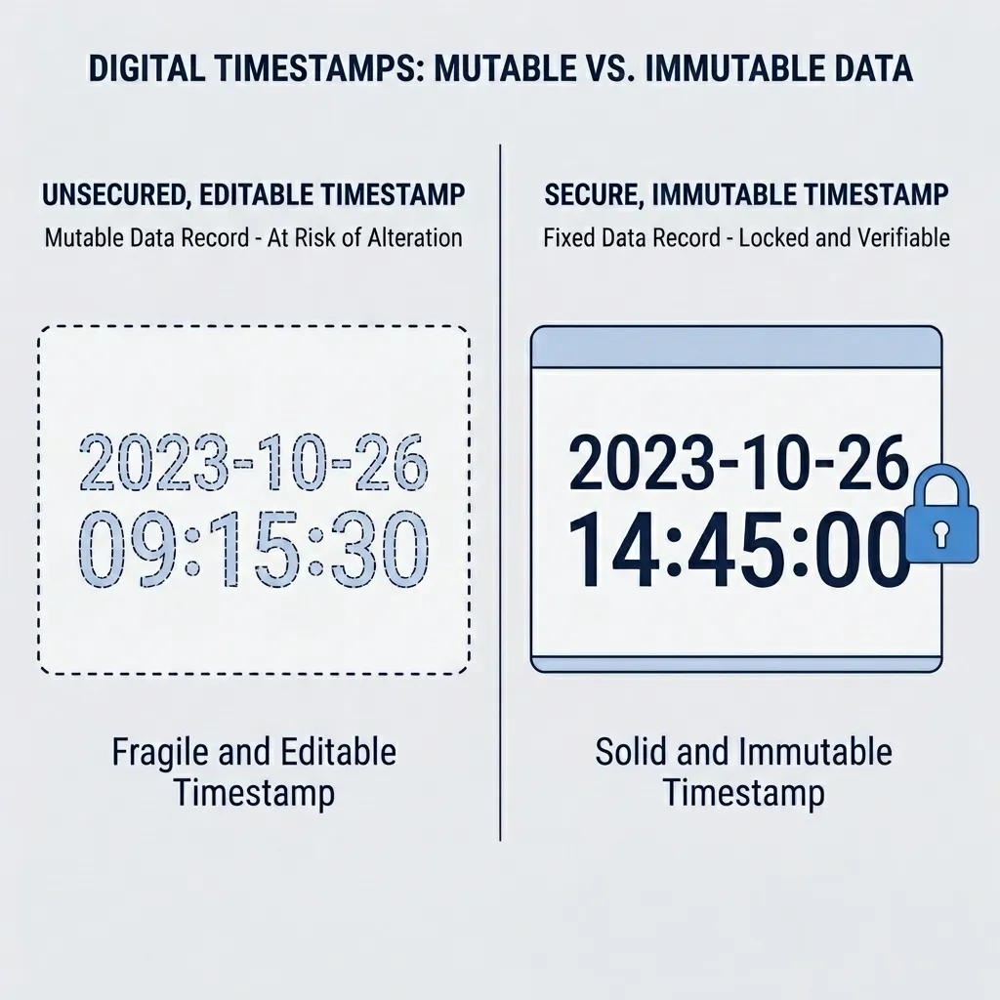

Your Safety Timestamps Are Testimony, Not Fact
A safety record's timestamp is testimony, not proof. Offline sync lets device clocks lie. Dual timestamps prevent a device clock from passing as evidence.


The investigator asks one question: was the Pre-Task Hazard Assessment (PHA) completed before the work started, or after the injury? You open the safety record. The PDF says 13:30, fifteen minutes before the crew began. It looks compliant. You cannot prove it.
The timestamp on that record is not a fact. It is testimony — a claim the worker's device made about what time it was — and your database wrote it down as if it were proof.
What a Timestamp Actually Is
A timestamp is not a chronology; it is a point-in-time claim. How EHS systems store these claims makes chronological sequence impossible to prove.
Most EHS applications store one date per record: a created_at value read directly from
the device clock when a user taps submit. The server accepts this value without verification. The
client asserts a time, and the database rubber-stamps it.
Standard database architecture already captures a server-side write time. This server timestamp does not prove when work occurred; offline records synced from dead zones arrive hours after authoring. But because a worker cannot edit server time, the gap between the client-reported time and the ingest time is the first signal of clock tampering or drift. Yet, standard safety compliance PDFs default to displaying the client device timestamp. The server-generated ingest time sits unqueried in the database. The system captures the secure parameter, but prints the editable one.
Accidental clock errors are more common than fraud. Shared field tablets run in incorrect time zones, workers disable automatic network time, and offline devices lose connection to time servers. If a tablet battery dies or a device reboots in a dead zone, the clock reverts to a hardware default (often years out of date) with no network to correct it.
A created_at value is not a measurement; it is an unsigned claim. This distinction is
invisible until an investigator demands a sequence reconstruction. On that day, the chronology
relied on to prove compliance becomes legally indefensible.
Why Fixing Sync Makes It Worse
EHS teams that deploy offline sync to solve capture failures introduce two invisible integrity risks: unverified latency and undetectable backdating.
Capture Failure and False Confidence
First is capture failure. When a worker taps submit in a basement or tank farm without signal, the network request times out and the record is lost. The standard product fix is local storage: save the form offline and sync when connection returns.
This creates a false sense of security. Previously, a missing record or a late paper form made the information gap obvious. Offline sync trades visible absence for unverified presence. The database accepts the record, rubber-stamps the timestamp, and creates two invisible data integrity issues.
Unverified Latency
A worker completes a PHA offline at 13:30. The device holds the payload. The worker drives into coverage that evening, and the record syncs at 18:00, stamped 13:30. A second worker submits an identical PHA online at 13:30, syncing instantly.
In the database, these records look identical. One sat in local queue for five hours; the other synced in five seconds. Without capturing sync latency, you cannot prove the actual order of events. In a regulatory investigation, an unprovable sequence is equivalent to an absent check.
Undetectable Backdating
Second is undetectable backdating. If an incident occurs at 14:00, a supervisor who failed to complete the mandatory PHA before work began can exploit the sync gap.
Device-Time Model (Vulnerable to Manipulation):
[Incident at 14:00] ── Supervisor writes PHA at 14:15 ──> Sets device clock to 13:30 ──> [Database record: 13:30]
Outcome: System shows compliance. The backdating is undetectable.
Dual-Timestamp Model (Latency Visible, Not Yet Resolved):
[Device time: 13:30] ── Ingested to server at 18:00 ──> [Database record: Local=13:30, Server Ingest=18:00]
Outcome: The 13:30 can no longer pass silently as real-time proof. But this record is identical to an honest PHA done at 13:30 and synced late — backdating and honest delay look the same until the monotonic counter (below) is checked.By setting the device clock back to 13:30, completing the form offline, and syncing at 18:00, the supervisor bypasses safety controls. The database records the PHA creation time as 13:30. During legal discovery, the record shows perfect compliance. The investigator cannot prove the document was backdated to cover a procedural violation.
While investigations triangulate data against CCTV and badge logs, these sources are often unavailable. When a camera misses the deck and witnesses disagree, the digital timestamp is the sole point of truth. It is the first piece of evidence a regulator inspects.
The database facilitates fraud by trusting client-side clock inputs. Mobile Device Management (MDM) cannot solve this. While you can lock down company-issued tablets, you cannot manage contractors' personal devices (BYOD). Contractors perform the highest-risk operations under severe commercial incentives to avoid shutdown penalties — such as liquidated damages or contract breach fees — making their editable device clocks an ideal vector for compliance tampering. This creates a systemic gap: an anonymized multi-employer site audit revealed that over forty percent of contractor checklists submitted as "completed before shift start" were authored hours after the shift began. While site-specific audit ratios vary based on supervisor oversight, the metadata gap remains constant: without dual timestamps, retroactive entries are indistinguishable from real-time records. Because you cannot control external hardware clocks, time verification must reside in the application logic itself, not the device operating system.
Why the Field Guarantees This
No policy creates connectivity in a dead zone, and no policy locks a contractor's personal device clock. When a device disconnects, it relies on its internal wall clock. Verification must occur on the device, not on the unreachable server.
Operational realities force offline execution. EHS applications run in underground mines, cargo holds, steel vessels, and remote forests. When offline capture fails, workers revert to paper or messaging apps. This data is keyed into spreadsheets days later, stripping all timeline metadata.
Disconnection does not prevent verification. A device's monotonic counter — a hardware stopwatch that runs continuously from boot — detects wall clock changes offline. Standard Network Time Protocol (NTP) caches only flag clock discrepancies during active sync; they miss clocks manipulated offline and reset before reconnecting. The hardware counter, not NTP, is the load-bearing validation.
Most EHS vendors choose to trust client clock inputs by default. Consequently, every remote operation generates records with untrustworthy chronologies. This liability scales with the risk and remoteness of the work.
Wearable sensors and location beacons confirm physical presence, but they do not prove compliance. A sensor cannot capture whether a worker assessed a hazard and accepted the residual risk. Even in automated facilities, the legal burden remains on proving human risk-awareness. This judgment requires a signed worker declaration before work begins, maintaining the manual form—and its timestamp—as the legal baseline.
The Specification Fix
First, address the input that requires no clock tampering. While the technical specification below
secures device_created_at (authoring time), safety compliance PDFs usually display
editable user-facing fields like "assessment completed at" or "shift start." Workers can freely
alter these date-time pickers.
A supervisor who missed a pre-task assessment can leave the tablet clock untouched. At 14:15, they
open the app, complete the PHA, and set the manual form picker to 13:30. The system-level
device_created_at records an honest 14:15. Hardware counters, boot anchors, NTP checks,
and enclave signatures all pass because the OS time was never modified. The printed PDF displays the
unverified 13:30 from the manual picker. This is a classic digital error trap. A safety record
carries three distinct timestamps: the system authoring time, the server ingest time, and the
worker-declared operational time. The third parameter is secured by nothing, yet it is the only one
regulators inspect.
Forcing the declared time to match the system authoring time is impractical; honest late entry (such
as keying paper forms into the application hours later) is legitimate. The solution is to refuse to
let the declared time stand alone on compliance documents. Print both values side-by-side:
Declared Time: 13:30 | System Authoring Time: 14:15. The system should flag gaps that
exceed the team's typical entry lag. Displaying these parameters transparently prevents a declared
time from passing as verified metadata.
Core Fields and Verification Inputs
To secure the system-level authoring timestamp, product managers must capture two distinct timestamps for every offline-enabled record and validate them against immutable inputs:
device_created_at(Local Timestamp): The client clock time at submission. Store the UTC offset (the difference in hours between the local time zone and Coordinated Universal Time, the global baseline), but derive the canonical local time fromserver_ingested_atand the site's geofenced time zone. This prevents zone-shifting fraud, where a user changes the tablet timezone (e.g., UTC+3 to UTC-1) to backdate local time without altering the UTC clock or tripping NTP checks. Flag all offset mismatches.server_ingested_at(Server Ingest Timestamp): The server's authoritative UTC clock time, recorded when the database writes the record. This value is immune to client-side manipulation.
These timestamps require an offline witness to prove the client clock was not altered while disconnected:
device_uptime_at(Monotonic Hardware Clock): Captures device runtime at submission. This acts as a hardware stopwatch built into the device processor that starts at zero when booted and only counts forward in milliseconds — similar to a car's trip odometer counting distance since the engine started. These monotonic registers are read-only to user-space applications, enforced at the CPU register level, and are reset only by power cycling, preventing manual adjustments.- Platform Implementation: Use Android's
elapsedRealtimeand iOS'smach_continuous_time(). Both count through sleep cycles, preventing false flags when a device is suspended. Avoid iOS'ssystemUptime, which pauses during sleep. - Sampling: Because mobile operating systems suspend background processes, the
application must log the
(wall_clock, monotonic_counter)pair on event-driven actions (launch, focus, autosave, submission) and persist it in sandboxed storage. - Anchor Verification: Compute the boot-time anchor by subtracting the hardware stopwatch count (monotonic counter) from the current system time (wall clock). This yields the exact moment the device was turned on (the boot anchor). Because both the wall clock and the hardware stopwatch rely on the same internal timing crystal, this calculated boot time remains constant. Any manual clock adjustment shifts the anchor, exposing the alteration without network connectivity.
- Handling Reboots: If a user reboots the device to clear the log, the anchor
breaks. Verify reboots via platform boot identifiers (e.g., Android's
BOOT_COUNT). Any unanchored session must be flagged as unverifiable. - Re-anchoring Constraints: Do not whitelist small clock shifts, as this reopens window-based backdating. Re-anchor only against authenticated sources, such as a backend server over certificate-pinned TLS. Standard GPS timestamps are insufficient: iOS locations derive their time from the system clock (making it spoofable), and Android requires raw Global Navigation Satellite System (GNSS) measurements API calls — which read raw satellite timing signals directly rather than relying on the device's system clock — which require open sky and drain battery. In deep dead zones, leave the session unverifiable rather than guessing.
- Platform Implementation: Use Android's
- Verify, then log — never gate: At sync, measure the device clock against an
authenticated outside source and log the variance.
- Drift Budgeting: Read the clock skew against the duration of offline status. A standard quartz crystal drifts 1–2 seconds per day; a device offline for three weeks is expected to drift by up to a minute. Flag only the skew that exceeds this drift budget.
- Time Authentication: Measure skew only against secure sources. Standard NTP packets can be spoofed using a rogue local router acting as a time server. Use Network Time Security (NTS) or retrieve time from your backend over TLS. Unauthenticated packets must not be used as reference times.
- Silent Logging: Do not block record submissions or gate them behind supervisor approvals. Gating causes alert fatigue and introduces review bottlenecks. Log anomalies silently to preserve the forensic trail for investigations. These anomalies should be surfaced in periodic quality assurance audits, not real-time gates.
How the Validation Checks Layer
These checks layer to cover each other's blind spots. The server sync check identifies clock skew remaining at connection. The monotonic counter catches clock changes within a single power-on session — a vector NTP cannot detect. The hardware counter does not false-alarm on natural oscillator drift because the wall clock and monotonic counter drift together, keeping the anchor stable. Only NTP checks accumulate drift because they measure against an external clock, which is why NTP tolerances must scale with offline duration. The latency check identifies delayed submissions. The main vulnerability is a device reboot, which clears the counter's anchor history; however, this results in an "unverifiable" state rather than a clean verification. Compute expected sync latency from the team's historical sync pattern rather than using a static threshold, which would flag remote teams unnecessarily.
Vulnerabilities of Sync Latency Baselines
Latency tracking is the weakest verification mechanism due to three vulnerabilities:
- Algorithmic Poisoning: A team that habitually backdates teaches the baseline model that long delays are normal, suppressing future flags.
- Clock Inheritance: Latency calculations rely on the device clock, meaning a skewed clock or incorrect timezone generates false delay flags.
- Intra-Shift Blindness: It cannot detect manipulation within a single sync window. If a crew syncs daily at 18:00, a supervisor can backdate a 17:30 entry to 08:00 without triggering a latency flag. Intra-shift tampering can only be caught by the monotonic counter.
Only server_ingested_at is fully secure because it is recorded by a clock the client
device cannot access. All client-supplied metadata — device times, NTP offsets, monotonic counter
logs, and latency metrics — serve as corroborative signals. The system provides exactly one absolute
fact (ingest time) and an audit trail showing how far the client claims can be trusted.
Cryptographic Attestation for BYOD Security
On contractor-owned devices (BYOD), sandboxed local databases do not prevent tampering. A rooted or jailbroken device exposes its SQLite files to direct editing via desktop backup tools, bypassing application-layer encryption. Persisted logs protect against casual alteration, but a sophisticated attacker can rewrite the local SQLite database to present a clean anchor log.
To secure the client-side values, the application must sign the payload — form data, timestamps, monotonic counters, and boot identifiers — using hardware-backed cryptographic keys (iOS Secure Enclave or Android StrongBox). The backend must verify through key attestation—a cryptographic check where the device's secure chip proves to the server that the keys were generated on genuine, untampered hardware, behaving like a digital wax seal on a document. Key attestation treats rooted, jailbroken, or emulated devices as unverifiable.
Hardware signatures make records tamper-evident post-submission, while monotonic counters detect active clock adjustments during authoring. Neither replaces the other.
Append-Only Event Ledger Schema
Safety records are rarely static. Workers append hazard controls, crew signatures, and risk revisions offline. If a sync engine updates records in-place, edits made at 14:15 will be backdated under the original 13:30 creation timestamp. To prevent this, model the database schema as an append-only event log. Every edit must be stored as a distinct record containing its own timestamps, boot anchor, and hardware signature, linked to the previous state. The server reconstructs the chronology (e.g., assessment created at 13:30, control added at 14:15) rather than displaying a flattened final state.
Low-Bandwidth Commit-on-Demand Fingerprinting
Remote sites often rely on low-bandwidth satellite networks (such as VSAT dish links or mobile BGAN terminals), making it impractical to upload complete sample logs daily. However, allowing the client application to summarize validation status locally reintroduces client-side trust risks.
The solution is a commit-on-demand strategy. The mobile app logs detailed clock-and-counter events locally, but syncs only a signed digital fingerprint (a cryptographic hash of the log) under one kilobyte. The server validates the fingerprint via hardware attestation. If an incident triggers an investigation, the raw logs are extracted and verified against the registered fingerprint. Devices that fail key attestation are marked unverifiable immediately.
Labeling unanchored records as unverifiable is a design requirement. In offline environments, an honest reboot and a backdated session are mathematically indistinguishable. While this marks some legitimate remote entries as unverifiable, the alternative is presenting unverified device times as facts. An explicit "unverifiable" status, presented alongside ingest latency, is a legally defensible position; a raw client timestamp is not.
Structured Resolution Pathway for Reboots
Excessive alerts degrade safety signals. A forestry crew that powers down tablets nightly to conserve battery will generate dozens of reboots over a shift. If every post-reboot entry is flagged as unverifiable, safety managers will ignore the flags, allowing actual backdated entries to pass unnoticed.
Do not block reboots. Instead, design a structured resolution pathway for unverifiable flags. Re-anchor the device clock immediately upon network reconnect (using NTS, TLS backend endpoints, or raw Android GNSS API calls). This limits the unverifiable flag to records created between the boot event and the next network contact.
Furthermore, establish an expected unverifiable baseline for each team. A flag is triggered only by anomalous deviations from this baseline. Finally, cross-reference metadata with secondary signals (such as battery discharge curves or coworker check-ins) to isolate malicious reboots from routine power-saving actions.
Multi-Device Timeline Reconstruction
This architecture secures individual record timestamps, not multi-device event sequences. For example, if Worker A completes a PHA offline at 10:00 (synced at 18:00) and Worker B submits an incident report online at 11:00 (synced at 11:00), sorting by server time wrongly places the incident before the PHA. Sorting by device time relies on unaligned hardware clocks.
To reconstruct a site timeline, the backend must adjust each device's timestamps by its recorded clock offset at sync. Unverifiable records must be displayed on the timeline with explicit uncertainty bounds rather than being interleaved as precise values.
Downstream Logging Limitations
While modern offline-first backends (such as Firebase, AWS AppSync, or PowerSync) write server-side ingest timestamps automatically, safety platforms rarely link these fields to compliance outputs. The architectural failure is not that databases lack ingest timestamps, but that product designers bury this secure metadata while printing the unverified device clock on compliance exports.
| Database Field | Legacy Field Design | Forensically Secure Field Design |
|---|---|---|
| Record Timestamp | created_at (trusts device input). |
Dual keys: device_created_at AND server_ingested_at. |
| Client Verification | None. Accepts any client-provided date. | Compares the device wall clock against NTP and a monotonic counter; logs every variance. |
| Audit Log Entry | "Record created at 13:30." | "Record written at 18:00 with local device timestamp of 13:30. Sync latency: 270 minutes." |
| Audit Status | Compliant. | Gap recorded in a log no one can edit; latency judged against the crew's baseline sync pattern, not a fixed cutoff. |
The Investigation Standard
Post-Incident Audit Diagnostic
When auditing a safety database post-incident, ignore the PDF printout. Instruct your vendor or IT
team to retrieve the server_ingested_at value alongside the
device_created_at timestamp for three recent submissions. If they cannot produce both
parameters, your system has no independent proof of chronology. If they can, verify whether the
ingest timestamp is exposed in inspector-facing exports, or hidden in an unindexed column. Finally,
confirm if the printed timestamp is a system-generated metadata value or a manual, user-editable
form input. If the PDF defaults to a form input, the database checks are irrelevant; the system
displays testimony, not proof.
RFP Specifications for Software Procurement
EHS professionals do not need to write database queries; they must use their purchasing power to require vendors to demonstrate dual-timestamp verification in their standard compliance exports. To enforce these standards, EHS procurement teams must incorporate four technical requirements into software RFPs:
- Expose Ingest Latency: Standard PDF exports must display
server_ingested_at, the client clock offset measured at sync, and an 'unverifiable' flag for any session created without a trusted time anchor. - Mandate Dual-Timestamp Reporting: Any manual, worker-declared time field must
be printed side-by-side with the system-generated
device_created_attimestamp. - Require Cryptographic Attestation: Submission payloads must be signed at creation using hardware-backed keys (e.g., Secure Enclave or StrongBox) and verified via backend attestation to reject tampered or emulated hardware.
- Enforce Append-Only History: All amendments must be stored as distinct, chained event logs, preserving the original creation metadata.
These requirements ensure the audit trail remains forensically defensible. The server ingest time bounds the arrival; the clock offset and boot anchor validate the device clock; the dual-timestamp reporting stops manual picker forgery; and the hardware signature prevents local database modification.
Legal Admissibility and Evidentiary Weight
Safety records become legal evidence during serious incident investigations. Under admissibility standards (such as US Federal Rule of Evidence 803(6)), a business record must be authored at or near the time of the event. If a database stores only client-side device times, the record must vouch for its own timeline. In forensic discovery, exposing that a system permits clock-shifting does not require proving fraud; it simply strips the safety record of the "trustworthiness" presumption required to admit it under business-record exceptions — shifting the burden of proving chronological accuracy back to the business. Permitting user-level timezone or clock modifications directly defeats the "regular practice of the business" reliability standard, discounting its evidentiary weight in both US and UK civil courts where timestamps under a worker's unilateral control are easily challenged.
Documenting latency is therefore essential, but it must be contextualized. A late ingest timestamp can be defended if it matches the team's routine sync pattern (e.g., a crew that syncs once daily at shift end). Furthermore, while regulations like FDA 21 CFR Part 11 mandate system-generated, tamper-evident timestamps, they assume online access to a trusted server clock. The EHS field reality — offline devices in remote zones — requires monotonic counters to establish trust where no server exists.
Chronology vs. Behavioral Compliance
Without independent server-side ingest capture, you cannot bound when a record was written. Clock-integrity checks separate honest late syncs from backdated submissions. However, no database schema can prove a worker physically walked the deck or assessed the hazard; the system secures the chronology of the declaration, not the act itself. The architectural goal is to stop displaying unverified inputs as absolute facts. That distinction separates standard safety databases from forensically secure platforms.
Incorporate these database specifications into software procurement checklists. They are rarely listed on vendor feature sheets, but they determine whether safety records survive forensic discovery.